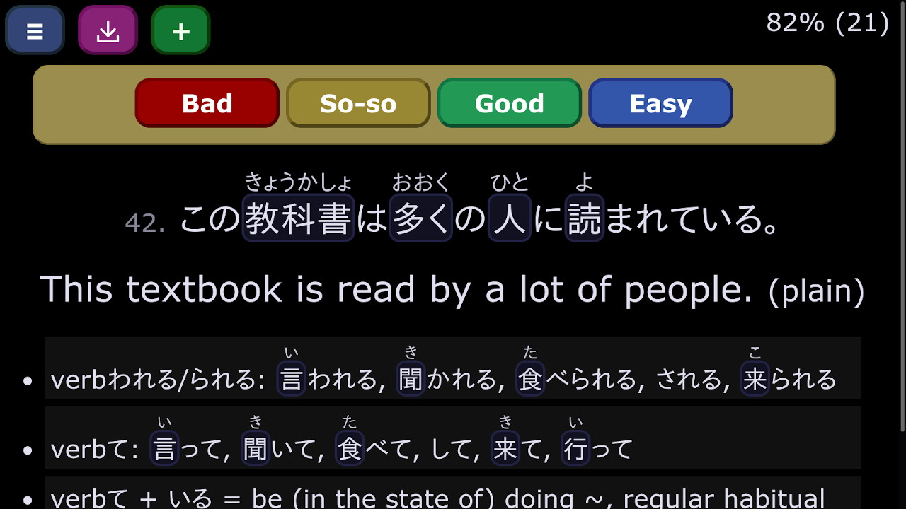

Kanji Practice

A writing based, minimalistic flashcard (SRS, Spaced Repetition System) app for learning Japanese kanji.
Flashcards
A minimalistic flashcard (SRS, Spaced Repetition System) app for language learning and more, with a dark color scheme.